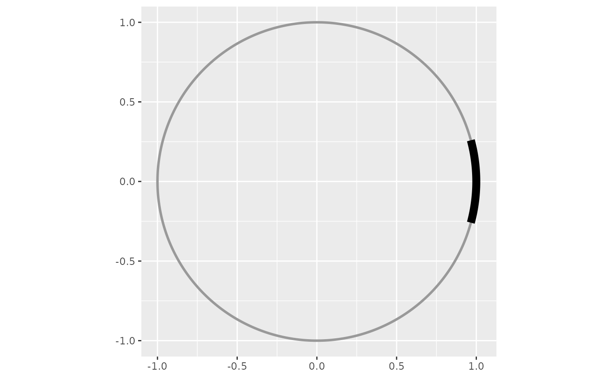

Draws a filled ribbon on the rim of the unit circle, spanning `width` in angular extent centred on `bearing`, depicting a dark bar or spot stimulus in an orientation arena. A wide `width` reads as a bar; a narrow `width` as a spot. The bearing is given in **display units** (the value read off the axis), so the arc lands at the labelled position under any [circ_display()] convention.
Usage
add_stimulus_arc(
bearing = 0,
width = 20,
thickness = 0.05,
r = 1,
fill = "black",
colour = NA,
alpha = 1,
display = circ_display(),
color = NULL
)Arguments
- bearing
Centre of the stimulus, in display units (degrees by default). Default `0`.
- width
Angular extent of the stimulus, in display units. Default `20`.
- thickness
Radial extent of the ribbon, in data units. Default `0.05` (straddles the circumference).
- r
Centre radius of the ribbon. Default `1` (on the unit circle).
- fill
Fill colour. Default `"black"`.
- colour, color
Border colour. Default `NA` (no border). `color` is the American-spelling alias.
- alpha
Fill alpha transparency. Default `1`.
- display
A [circ_display()] giving the plot's angle convention. Default `circ_display()`. Pass the same value used in [radiate()].
American spellings
Every `colour...` argument and the `assign_colour_*` / `cycle_colours` / `hf_colour_col` functions accept the American `color...` spelling as an alias (e.g. `color`, `color_col`, `track_color`). British spelling is canonical; supplying both spellings of a pair is an error.
Examples
library(ggplot2)
ggplot() + coord_fixed() + add_circ() +
add_stimulus_arc(bearing = 90, width = 30)
